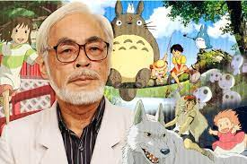

 Miyazaki was born on January 5, 1941, in Tokyo. He was one of four sons of Katsuji Miyazaki, who worked in the family business Miyazaki Airplanes, which manufactured parts for warplanes. Miyazaki indicated later in life that he felt guilty that his family had profited from Japan's efforts in World War II. His dislike of militarism would be reflected in such films as Nausicaä of the Valley of the Wind and Porco Rosso . Partly to escape the American bombing of Tokyo and partly to be closer to the Miyazaki Airplanes factory in Kanuma City, Katsuji Miyazaki moved his family to Utsunomiya City, where they lived from 1944 to 1946. During this period the young Hayao may have become familiar with the forest that would figure prominently in My Neighbor Totoro . His mother was sick with spinal tuberculosis from 1947 to 1955, staying in a hospital for three of those years; this state of affairs prefigured the family situation presented in My Neighbor Totoro.
In 1958 Miyazaki became interested in animated movies, his imagination having been stirred by Hakujaden (Legend of the White Snake), a motion picture that was produced by Toei Animation and was Japan's first color feature-length anime. At that time, however, Miyazaki wanted to be not an animator but a comic-book artist. He majored in economics and political science at Gakushuin University, graduating in 1963, but his heart was in the arts, especially as they appealed to children; he pursued his interest in comic books as a member of the university's children's literature club.
In April 1963 Miyazaki became an animator for Toei Animation, which produced both theatrical motion pictures and television series. He was taught the basics of animation and began at the bottom of the artistic hierarchy, laboriously filling in the cel-by-cel movements of characters and objects; he found the work enjoyable and therein probably learned to accurately draw characters. He impressed many of his coworkers with his fertile imagination and proposed numerous story ideas to the studio; he quickly became a leader in the animators' union. In 1964 he met the animator Akemi Ota, who would become his wife in 1968. That year the first motion picture in which he played a major role was released: Prince of the Sun , a collaboration with the chief animator Yasuo Otsuka and the director Isao Takahata. Takahata would later serve as the producer for some of Miyazaki's own movies.
Personal Information
Hayao Miyazaki
Japanese filmmaker
Director and co-founder of Studio Ghibli
| Birth | January 5 from 1941 (79 years) Tokyo, Japan |
| Parents | Mother: Dola Miyazaki Father: Katsuji Miyazaki |
| Spouse | Akemi Ota (1965–present) |
| Son(s) |
Goro Miyazaki |
| Alma mater | Gakushuin University |
| Profession |
|
| Employer | Toei Animation (1963–1971) The Production (1971–1973) Zuiyo Eizo (1973–1975) Nippon Animation (1975–1979) Tokyo Movie Shinsha (1979–1982) Topcraft (1982–1985) Studio Ghibli (1985–present) |